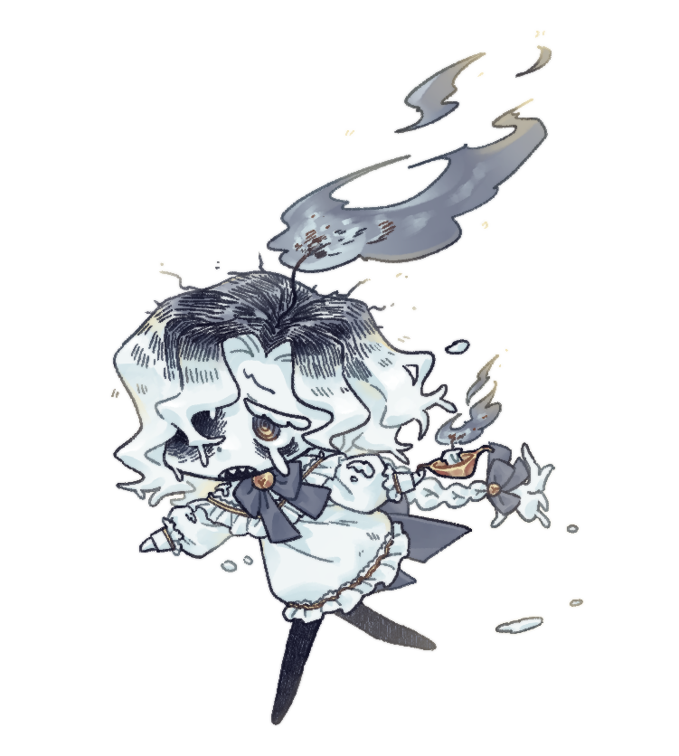
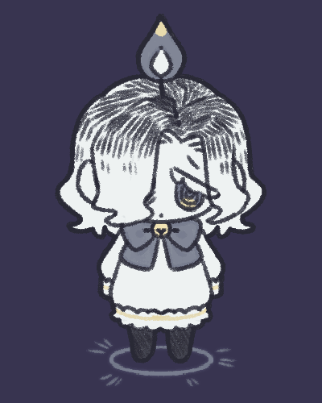
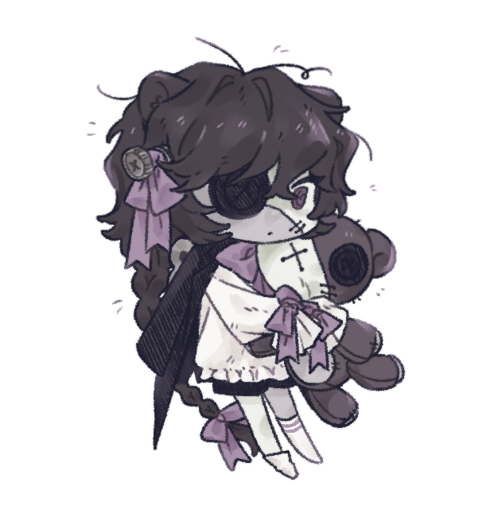
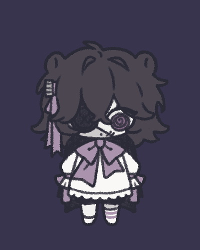
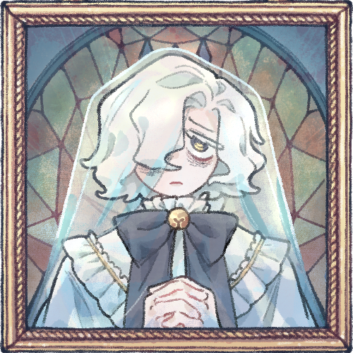

|  |

|
 |
| SD전신 일러스트 | 인게임 내 갤러리에서 볼 수 있는 모습 | 인게임 조작 모습 |
주인공이자 플레이어가 조종할 수 있는 캐릭터 중 한명. 자신을 저택의 관리인이라고 소개한다. 게임 속 인물들 중에서 유일하게 화면 밖 플레이어를 인식하는 메타캐이다.
본체는 항상 들고다니는 작은 양초이며 이름에서 알 수 있듯, 실제 인간이 아닌 양초로 만들어진 인간이다. 모티브는 양초와 유령.
온 몸이 밀랍으로 되어있어 불에 취약하지만 정수리와 타는 심지와 작은 양초의 불은 신체일부와 거의 동일하기 때문에 괜찮다고...
자칭 저택의 관리인에 맞게 규칙에 대해 강박을 가지고 있으며, 특히 자신이 정해놓은 일에 착오가 생기는 것에 민감하게 반응한다.
다른 플레이어블 캐릭터와의 상호작용, 혹은 저택의 물건과 플레이어를 대하는 태로도 보아 굉장히 히스테릭한 성격.
플레이어를 인식하기 때문에 자신이 플레이어에게 조종당하는 것을 알 고 있으며, 스토리를 진행하는 중간중간 플레이어의 관섭을 무시하고 행동하는 경우가 존재한다.
대부분은 캔들이 정해놓은 저택의 규칙을 플레이어가 어기면 관섭을 무시한다, 엔딩을 진행하면 할 수록 플레이어를 방해하기 위해 관섭을 무시하는 경우가 있다.
캔들을 조종하고있지 않을 때, 저택의 규칙을 어기면 캔들에 의해 게임오버를 당할 수 있다.
|  |  |
| SD전신 일러스트 | 인게임 조작 모습 |
플레이어가 조종할 수 있는 캐릭터 중 한명. 본체는 항상 들고다니는 커다란 곰인형이다. 캔들과 마찬가지로 인간이 아니며 인형이다.
모티브는 곰인형과 태엽인형 프랑켄슈타인으로 추청된다. 캐릭터 얼굴의 접합부와 오른쪽 옆 머리에 볼트 등을 보아..
히스테릭한 캔들과 달리 말 수가 굉장히 적고 둔한 성격이다.
상호작용에 대한 반응도 의성어나 짧은 단어를 말하고 끝내는 경우가 대부분인 것을 보아 글자를 모르거나 말을 제대로 할 줄 모르는 것처럼 느껴지기도 한다.
|  |
| 인게임 내 갤러리에서 볼 수 있는 모습 |